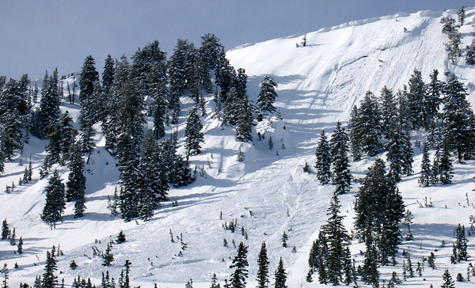
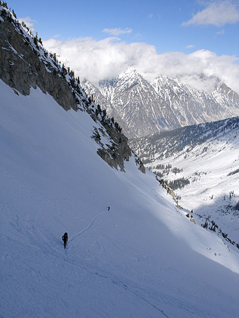
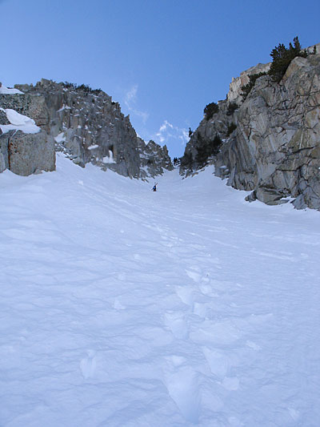
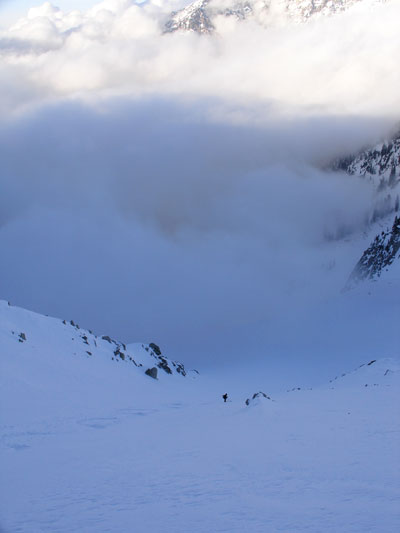
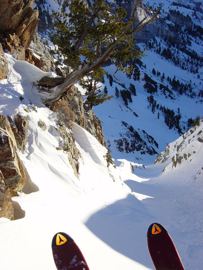
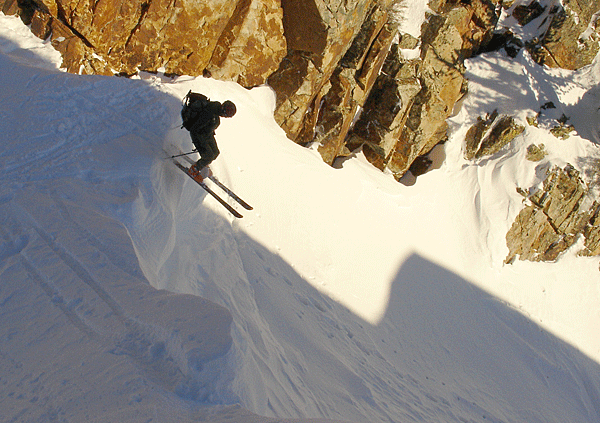

February 2005 Tuesday the 22nd There, on the screen before us, as well as on screens all across the country, was Professor Ragdoll. We Cheered! The clip was brilliant. His line, which will go down in backcountry skiing history, was this: "we've got beacons, probes and shovels". How Provocative! Then someone in the editing room had a stroke of genius. Next to Professor R's statement they placed a clip of an avalanche survivor standing in front of the canyon in which he nearly perished. Here's his line: "I didn't have a beacon or shovel or probe". I hope he was glad to be on national tv too! Runs in with the media can be fun after all! Next time Teem Freek runs into a reporter doing a story on avalanches we all agreed that we would share with the world what else we carry for avy safety: twine, small portable chain saws, Village People™ costumes, a 12 gauge shot gun, and a case of PBR!
 Monday the 21st There is one corner that is notorious for black ice, and today was no exception. PowderPrincess was behind the wheel of the WeenerWagon. She was hauling so much ass that Foothill didn't even have the chance to utter the sage advice "SLOW THE FUCK DOWN!" A jogger, sensing disaster, dove off the road and into a snowbank. Then it happened. The WeenerWagon lost traction in its rear end and it swung free out to the side. Then began the pendulum effect and the truck began swinging back and forth, back and forth. The Princess was wildly spinning the wheel trying to recover. She spun it madly to the right, then madly to the left, as if she was sugar bombed child fevorishly spinning a fake steering wheel, controlling nothing but determined anyway. But The Princess expertly kept us on the pavement, out of the way of trees, creek, snowbanks and other suddenly perilous looking obstacles. Eventually the truck grabbed back onto the road and we got back into our lane in time for the oncoming traffic to safely pass. Phew! By the time we got to the trail head the adrenalin had subsided and we had already laughed it off. But when we opened the flat bed cap rear door, we were greeted by a battered Starchild. The poor pooch had slammed into something and had a bloody gash under her eye as well as a bad case of the shivers. After a thurough checking by a wilderness first responder, a physical therapist, a nursing student, and an emergency room doc (all Teem Freek members), StarChild was verified "good to go" and she happily sprung off the gate into another beautiful day in the Wasatch. Saturday the 19 Sickness! No Skiing! Thursday the 10th Sunday the 6th Saturday the 5th 

 Thursday
the 3rd

 |